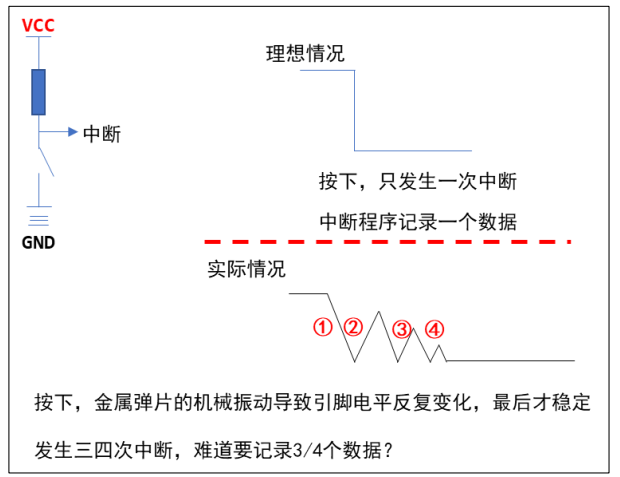

hal快速入门 GPIO
通过原理图，可看出PC13低电平，灯亮，反之不亮。
使用cubemx生成空项目
配置LED:
使能 GPIO 模块
把引脚配置为 GPIO 功能：把引脚连接到芯片内部的 GPIO 模块，而不是连接到其他模块
配置 GPIO 模块，把引脚配置为输出引脚
配置引脚，让它输出高电平或低电平
使用cubemx加入PC13配置
1 2 3 4 HAL_GPIO_WritePin(GPIOC,GPIO_PIN_13,GPIO_PIN_RESET); HAL_Delay(500 ); HAL_GPIO_WritePin(GPIOC,GPIO_PIN_13,GPIO_PIN_SET); HAL_Delay(500 );
案例 按键控制led
修改gpio方向
1 2 3 4 5 6 7 8 GPIO_PinState stat; stat = HAL_GPIO_ReadPin(GPIOB,GPIO_PIN_14); if (stat == GPIO_PIN_RESET) { HAL_GPIO_WritePin(GPIOC,GPIO_PIN_13,GPIO_PIN_RESET); } HAL_GPIO_WritePin(GPIOC,GPIO_PIN_13,GPIO_PIN_SET);
按下亮松开熄灭
光敏传感器控制LED
1 2 3 4 5 6 7 8 9 10 11 12 13 14 15 16 17 18 static int isDark (void ) { return (HAL_GPIO_ReadPin(GPIOB,GPIO_PIN_11)== GPIO_PIN_SET); } static void LEDControll (int on) { if (on) HAL_GPIO_WritePin(GPIOC,GPIO_PIN_13,GPIO_PIN_RESET); else HAL_GPIO_WritePin(GPIOC,GPIO_PIN_13,GPIO_PIN_SET); } if (isDark()) { LEDControll(1 ); } LEDControll(0 );
GPIO中断 中断可以解决上述按键查询丢失的问题
中断处理流程
1 2 3 4 5 6 7 8 9 10 11 12 13 14 15 void HAL_GPIO_EXTI_Callback (uint16_t GPIO_Pin) { if (GPIO_Pin==GPIO_PIN_14) { if (HAL_GPIO_ReadPin(GPIOB,GPIO_PIN_14)==GPIO_PIN_RESET) { HAL_GPIO_WritePin(GPIOC,GPIO_PIN_13,GPIO_PIN_RESET); } else { HAL_GPIO_WritePin(GPIOC,GPIO_PIN_13,GPIO_PIN_SET); } } }
oled调试
导入字库和oled驱动程序（后面会讲）
1 2 void OLED_Test (void ) ; OLED_Test();
便可使用，具体函数操作详看oled驱动文件
按键驱动程序改进 使用定时器消除抖动 
核心思想：
在 GPIO 中断中并不立刻记录按键值，而是修改定时器超时时间，10ms 后 再处理。如果 10ms 内又发生了 GPIO 中断，那就认为是抖动，这时再次修改超时时间为 10ms。只有 10ms 之内再无 GPIO 中断发生，那么定时器的函数才会被调用。在定时器函数中 记录按键值。如下图：
在按键中断程序中进行修改：
主要框架为,先设置定时器结构体：
1 2 3 4 5 6 struct soft_timer { uint32_t timeout; void * arg; void * (*func)(void *); };
每次按键按下进终端进行时间延长
1 2 3 4 void mod_timer (struct soft_timer * ptimer,uint32_t timeout) { ptimer->timeout =HAL_GetTick()+timeout; }
之后在定时器每个1ms中断中加入check函数检查是否超时，如果超时进行复位操作，计时器加1
1 2 3 4 5 6 7 8 9 10 11 12 13 14 15 16 void key_timeout_func (void * args) { g_key_cnt++; key_timer.timeout= ~0 ; } void check_timer (void ) { if (key_timer.timeout<=HAL_GetTick()) { key_timer.func(key_timer.arg); } }
环形缓冲区 即使使用中断函数或者定时器函数记录按键，如果只能记录一个键值的话，如果不能 及时读走出来，再次发生中断时新值就会覆盖旧值。要解决数据被覆盖的问题，可以使用 一个稍微大点的缓冲区，这就涉及数据的写入、读出，可以使用环形缓冲区。
空的时候：r==w
满的时候：下一个w位置==r
编写环形缓冲区代码：
头文件
1 2 3 4 5 6 7 8 9 10 11 12 13 14 15 16 17 18 #ifndef __CIRCLE_BUF_H_ #define __CIRCLE_BUF_H_ #include <stdint.h> typedef struct circle_buf { uint32_t r; uint32_t w; uint32_t len; uint8_t * buf; }circle_buf,*p_circle_buf; void circle_buf_init (p_circle_buf pCircleBuf,uint32_t len,uint8_t * buf) ;int circle_buf_read (p_circle_buf pCircleBuf,uint8_t * pVal) ;int circle_buf_write (p_circle_buf pCircleBuf,uint8_t pVal) ; #endif
c文件实现
1 2 3 4 5 6 7 8 9 10 11 12 13 14 15 16 17 18 19 20 21 22 23 24 25 26 27 28 29 30 31 32 33 34 35 36 37 38 39 40 41 42 43 44 void circle_buf_init (p_circle_buf pCircleBuf,uint32_t len,uint8_t * buf) { pCircleBuf->r=pCircleBuf->w=0 ; pCircleBuf->len=len; pCircleBuf->buf=buf; } int circle_buf_read (p_circle_buf pCircleBuf,uint8_t * pVal) { if (pCircleBuf->r!=pCircleBuf->w) { *pVal=pCircleBuf->buf[pCircleBuf->r]; pCircleBuf->r++; if (pCircleBuf->r == pCircleBuf->len) pCircleBuf->r=0 ; return 0 ; } else { return -1 ; } } int circle_buf_write (p_circle_buf pCircleBuf,uint8_t pVal) { uint32_t next_w; next_w =pCircleBuf->w+1 ; if (next_w == pCircleBuf->len) { next_w =0 ; } if (next_w != pCircleBuf->r) { pCircleBuf->buf[pCircleBuf->w]=pVal; pCircleBuf->w=next_w; return 0 ; } else { return -1 ; }
主函数
1 2 3 4 5 6 7 8 9 10 11 12 13 14 15 16 17 18 19 20 21 22 23 24 25 26 27 28 29 30 31 32 33 34 35 36 37 static uint8_t buf[100 ];static circle_buf g_key_bufs;void key_timeout_func (void * args) { uint8_t key_val; g_key_cnt++; key_timer.timeout= ~0 ; if (HAL_GPIO_ReadPin(GPIOB,GPIO_PIN_14)==GPIO_PIN_RESET) { key_val=0x1 ; } else { key_val=0x81 ; } circle_buf_write(&g_key_bufs,key_val); } OLED_PrintString(0 ,0 ,"cnt :" ); len=OLED_PrintString(0 ,2 ,"key_val :" ); while (1 ) { OLED_PrintSignedVal(len,0 ,g_key_cnt); uint8_t key_val=0 ; if (0 == circle_buf_read(&g_key_bufs,&key_val)) { OLED_PrintHex(len,2 ,key_val,1 ); } }
USRT 通用异步收发器简称 UART，即“Universal Asynchronous Receiver Transmitter”， 它用来传输串行数据：发送数据时，CPU 将并行数据写入 UART，UART 按照一定的格式在一 根电线上串行发出；接收数据时，UART 检测另一根电线上的信号，将串行数据收集放在缓 冲区中，CPU 即可读取 UART 获得这些数据。UART 之间以全双工方式传输数据，最精简的连 线方法只有三根电线：TxD 用于发送数据，RxD 用于接收数据，GND 用于给双方提供参考电 平，连线如图所示：